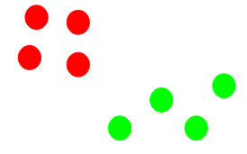

Machine Learning: Clustering
Announcements
- Assignment 7: Due Wednesday May 18th
- Last class!
Clustering
Clustering
- Clustering is an unsupervised ML method
- Clustering algorithms will attempt to divide a set of data into 2 or more segments
- Data within clusters should be as similar as possible
- Data between clusters should be as different as possible
How can we best draw N boundaries around this data?

- Most algorithms require you to say how many clusters you want in advance
- But there are also methods to suggest an optimum number of clusters from the data
K-Means Clustering
- Simple, works fairly well
- Pick N random points in your data where N=number of clusters
- Each of these points is called the centroid
- Go through every other point and assign it to the nearest centroid
- For each of the clusters, find the new center of the cluster
- Now go through each point and re-assign to the closest centroid
- Keep doing this till the clusters stop changing



Uses of clustering
- Segmentation (audience/customer)
- Document clustering
- Image segmentation
- Recommendation engines